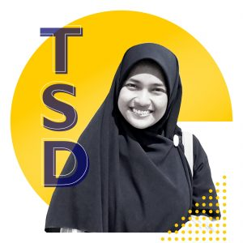

Dr. Dwi Rantini, S.Si.

Muhammad Noor Fakhruzzaman, S.Kom., M.Sc

Indah Fammiyah, S.Si., M.Stat.
Ratih Ardiati Ningrum, M.S., M.Stat.
Ika Qutsiati, S.Kom., M.Sc
Mohammad Ghani, S.Si., M.Si, Ph.D.
Dr (Cand) Septia Devi Prihastuti Yasmirullah, S.Si